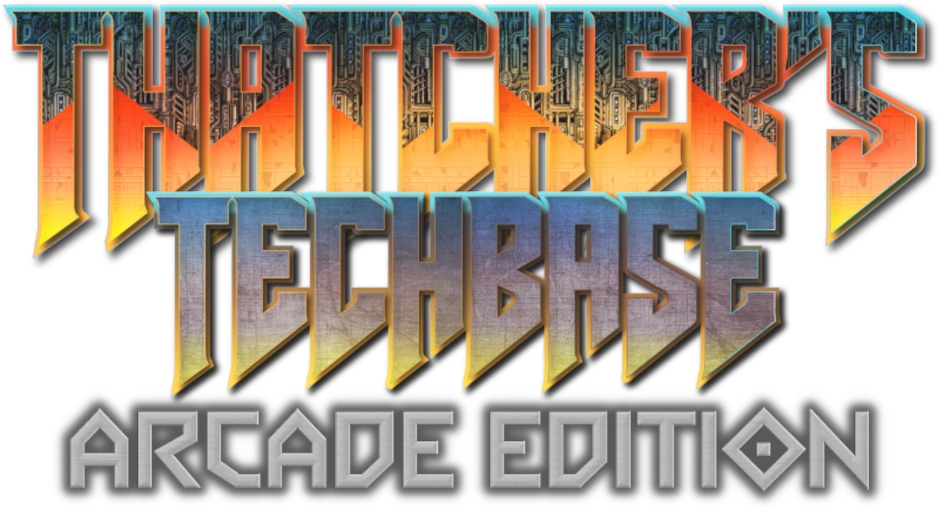

Released: September 24th, 2021
Play the original experience. A miserable, unforgiving dungeon-crawler that really makes you feel like you're in the Tenth Circle of British Hell.More difficult than Arcade Edition, with more focus on navigation and puzzle-solving.

Released: September 24th, 2022
Jeremy Corbyn's "favourite game"Created for TWT 2022 in support of LIVING RENT. Focuses on fast, action-packed fighting, and thinking as little as humanly possible.
Features new areas, enemies, weapons, and gameplay changes!